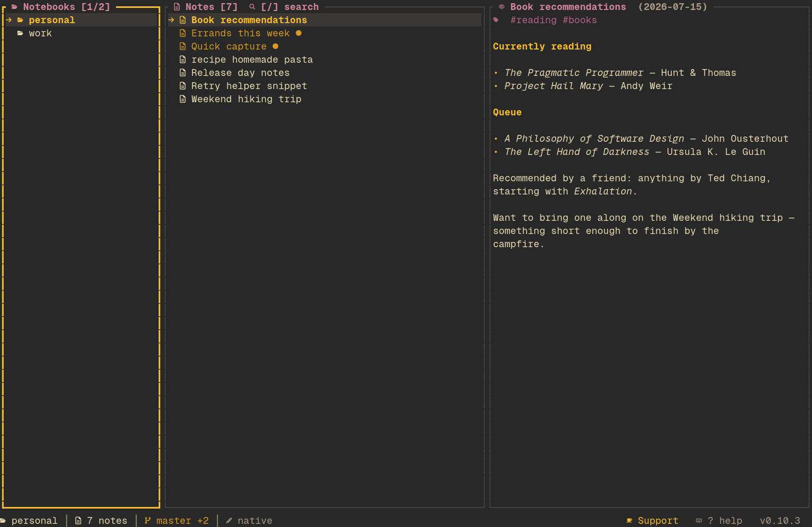

[theme] name = "auto"). shiki now follows the terminal's own color scheme in real time instead of needing a restart: auto_dark (default gruvbox-dark) is used while the terminal background is dark and auto_light (default gruvbox-light) while it is light. The TUI re-reads the background over OSC 11 roughly every 1.5 s, only after ~400 ms with no input and only on the main thread between crossterm polls — a background reader would race crossterm for the reply and corrupt keystrokes, and querying while typing could swallow one. Terminals that don't answer (tmux without passthrough, non-VT consoles, Windows) back off to one probe every 30 s and stay on the dark half. auto is selectable from the theme picker (System group) and shiki theme set auto; per-notebook theme_name overrides still win, and a concrete theme name ignores the detected scheme entirely. The status line confirms each live switch (theme: gruvbox-light (auto · light)), and shiki doctor validates both configured halves.default (terminal-inherit) theme now use the terminal's own palette. Its ANSI names/"reset" slots used to be approximated with fixed RGB values before reaching syntect, so code highlighting never matched the rest of the inherited UI. Non-RGB slots are now carried through the highlighter as a sentinel and decoded back to native ratatui::Colors — keywords use the terminal's blue, strings its green, comments its dark-gray, etc., and plain code text defers to Reset. Hex-based themes are unchanged.scripts/theme-demo.sh, a one-command live-theme demo: it builds the release binary, seeds a throwaway multi-notebook dataset in an isolated XDG environment with theme.name = "auto" enabled, and launches it (--launch), so switching the terminal's light/dark theme can be seen without touching real notebooks or config.notify-based live-reload watcher (shiki-tui/src/fs_watch.rs) watched OPEN events as well as real writes, and shiki itself opens every note when listing a directory. That made a feedback loop: list notes → Open events → reload after the 300 ms debounce → list again → more Open events, with PREVIEW's cache dropped on every reload and visibly clearing/redrawing about every 0.4 s. Read-side access events (Open, Close(Read), …) are now ignored; Modify, Create, Remove and Close(Write) still trigger a reload, so external edits keep showing up live.